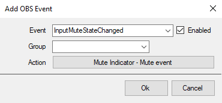
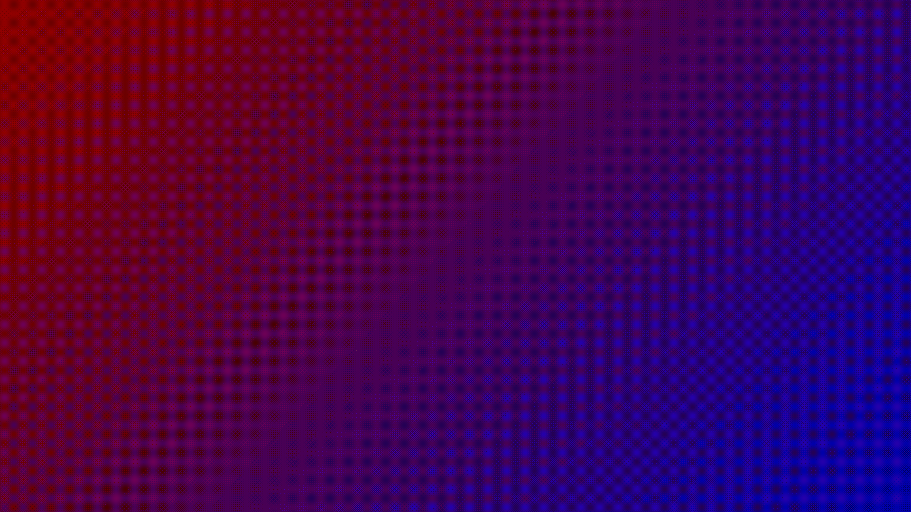

Import File
Installation
In Streamer.bot select Import in the top left.
Drag and Drop the Import File into the
Import String.
Configuration
Streamer.bot
1. Make sure you've imported the import code
above.
2. Link the Mute Indicator - Mute event action to the
InputMuteStateChanged event in Stream Apps
--> OBS.
3. Make sure that the Server/Clients -->
Websocket Server is enabled.

OBS Studio
1. Make a browser source in OBS Studio with the settings:
Width = 1920, Height = 1080.
2. Put the URL of the widget in the Browser Source, find URL
here.
Widget
Put this URL into OBS: https://ik1497.github.io/Extensions/Mute-Indicator/
URL Parameters
Misc
Font
Gap
Chips
Themes
use ?theme
Extra
Make it your own with URL Parameters! This example image below uses:
https://ik1497.github.io/Extensions/Mute-Indicator?chip-background=rgb(255,255, 255)&chip-border-radius=20px&exclude=[A] Music
For any suggestions about this widget or any theme feel free to send me a DM on discord or open an issue.